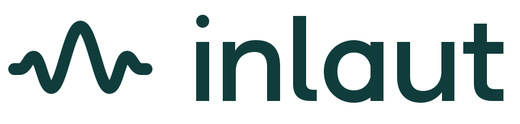

inlaut
Sprachimpuls · Petrol & Mint


Eine Stimme. Eine klare Form.
Ein zusammenhängender Sprachimpuls verbindet weiche Kurven mit einer prägnanten Silhouette. Petrol gibt der Marke Ruhe, Mint bringt Licht und Klarheit. Die flache Form trägt die Identität; Glastiefe ergänzt sie im App-Icon.
Farbwelt
App, Menüleiste und Web
App-Icon: 16–1024 px, ICNS und Xcode-Asset-Katalog.
Menüleiste: einfarbiges Template in 18/36/54 px.
Web: SVG, ICO und PNG-Favicons; Logos in vier Farbvarianten.
Die native Liquid-Glass-Fassung wird aus den beiliegenden Ebenen in Icon Composer erstellt. Der enthaltene Glas-Export ist statisch. Die flachen SVGs sind die geometrisch vereinheitlichten Produktionsmaster.